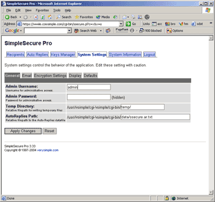
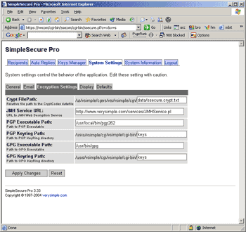

SimpleSecure: Configuration
SimpleSecure: Configuration
 SimpleSecure includes a web-based administration panel that allows you to control all of the runtime settings.
To open the administration panel, direct your browser to:
https://www.YOURDOMAIN.com/cgi-bin/ssecure/ssecure.pl
The default login information is:
Username = admin
Password = admin
Step One: Change The Admin Password
For security reasons, it is recommeded that you first change the administrator password.
To change the password, click on the "System Settings" navigation link. The "General" tab of the System Settings page contains the admin username/password (see screenshot). You should update this to a username/password of your choice.
ATTENTION: It is not recommeded to use the same password for SimpleSecure that you use for your FTP or Host account. This is a poor security practice!
Step Two: Specify the Email Method
The "Email" tab on the System Settings page is where you must specify the method that SimpleSecure will use to send email messages. The two supported methods are SENDMAIL and SMTP. If you choose Sendmail, then you must also enter the path to sendmail on your server (ex "/usr/bin/sendmail"). If you choose SMTP, then you must also enter the address of the SMTP server (ex "localhost" or "smtp.mydomain.com").
 Step Three: Configure GPG/PGP Path:
(This step is only necessary if you plan to use the encryption features of SimpleSecure)
The "Encrypting Settings" tab of the System Settings page contains fields for PGP and GPG (see screenshot).
GPG & PGP Executable paths should be something like "/usr/bin/pgp" or "/usr/bin/gpg". If your site is hosted on a Windows server, The path may be something like "C:/Program Files/PGP/pgp.exe" (In the case of Windows servers, leave the quotes around the path).
The Keyring path can be configured in two ways.
A. (recommended). Specify the full path to th e ~/cgi-bin/ssecure/keys directory. (for example "/usr/www/public_html/myaccount/cgi-bin/ssecure/keys") Use the same value for both GPG and PGP keyring path.
B. (advanced). If you already have a location where you store GPG/PGP keyrings, you may specify the full path here. (for example "/usr/home/myaccount/.pgp"). If you decide to configure the path this way, you must also allow world-read access to your keyring folder.
SimpleSecure is now configured and ready to test...
© copyright 1997-2004, verysimple, inc.